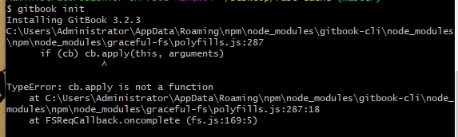
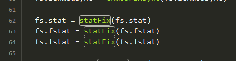
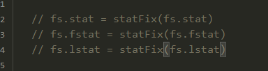
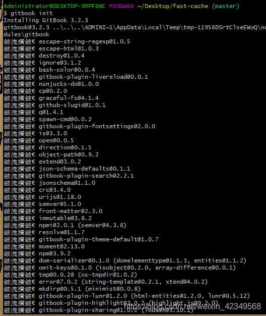

test
Contents
本文由 简悦 SimpRead 转码， 原文地址 blog.csdn.net
一，使用 gitbook init 时，卡在了 Installing GitBook 3.2.3 这一步
解决办法： 一，翻墙 二，使用淘宝镜像下载： npm 下载路径，检查是不是淘宝镜像：
|
|
切换成淘宝镜像 再检查是不是淘宝镜像：
|
|
再安装：
|
|
之前是一直卡在这里，我打了三局王者荣耀都没好！！设置之后，打了一局，回头一看，就出来了！ 但是报错了！！！但这又是另一个悲伤的故事。。。
二，if (cb) cb.apply(this, arguments)，cb.apply is not a function
产生了如下的报错：

产生这个报错的原因在于，nodejs 的版本不对，不支持这个 gitbook. 有两个解决办法： 一，切换 nodejs 的版本： 切换成 nodejs 的 v10.21.0 版本就会成功。 当然啦，在这里，我又接触到了新的知识！因为 nodejs 的版本很多，所以，就有 nodejs 的版本控制工具，可以方便地切换版本！但是时间有限，都凌晨一点了！我就采用直接安装 v10.21.0 版本先解决啦~~ 这是这个方法的博客地址，里面有 v10.21.0 版本的 nodejs 下载：
https://blog.csdn.net/Lowerce/article/details/107579261
二，第二个方法呢，就更方便且不要脸了，就是把报错的代码注释掉！
直接打开报错的文件：
C:\Users\Administrator\AppData\Roaming\npm\node_modules\gitbook-cli\node_modules\npm\node_modules\graceful-fs\polyfills.js
错误的位置在代码的第 287 行，就是这个死乞白赖的函数！！！
|
|
这个函数的作用是用来修复 node.js 的一些 bug, 但是我就为了学个 gitbook, 没必要难为我自己！ 所以，我就找到这个函数的调用：

 就成这样子啦！嘿嘿~ 现在是夜里，隔壁的两个小姑娘估计在看电影，网速不是很快，我又等了十来分钟，就完成啦！！

完结！撒花花！啦啦啦！！！
Author olOwOlo
LastMod 2021-03-04